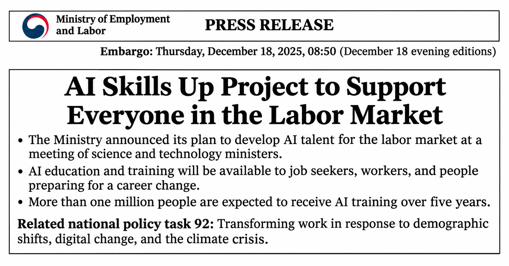
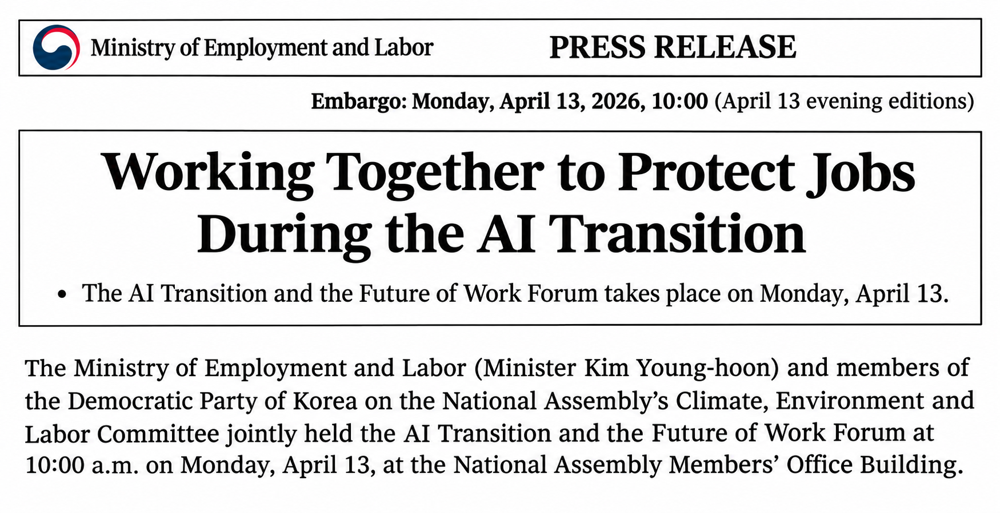
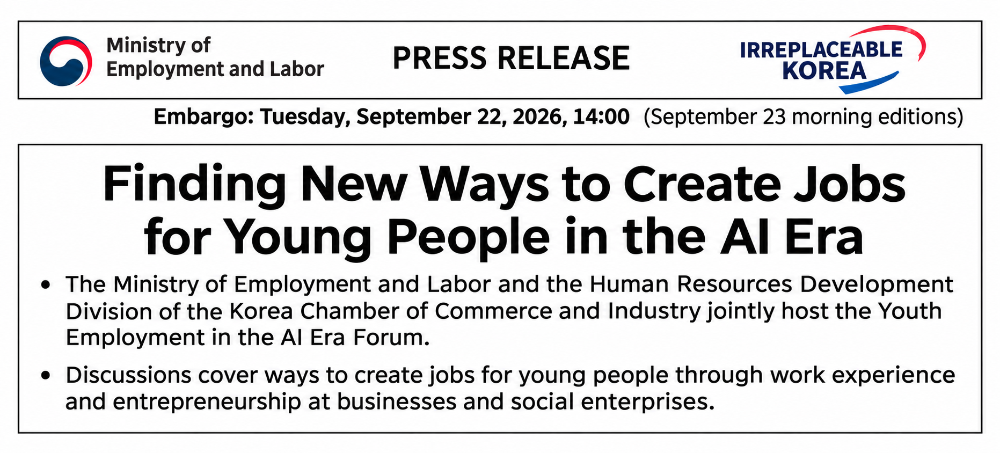

How MOEL Enabled Staff to Build AI
1. A clear message from leadership
MOEL consistently set out what it wanted AI to achieve.
- Reduce staff workload
- Tailor services to the public
That direction gave staff a reason to develop AI tools for their own work.
-
AI training for the workforce 
-
Forum on AI and the future of work 
-
Free AI courses for the public -
Forum on youth jobs in the AI era 